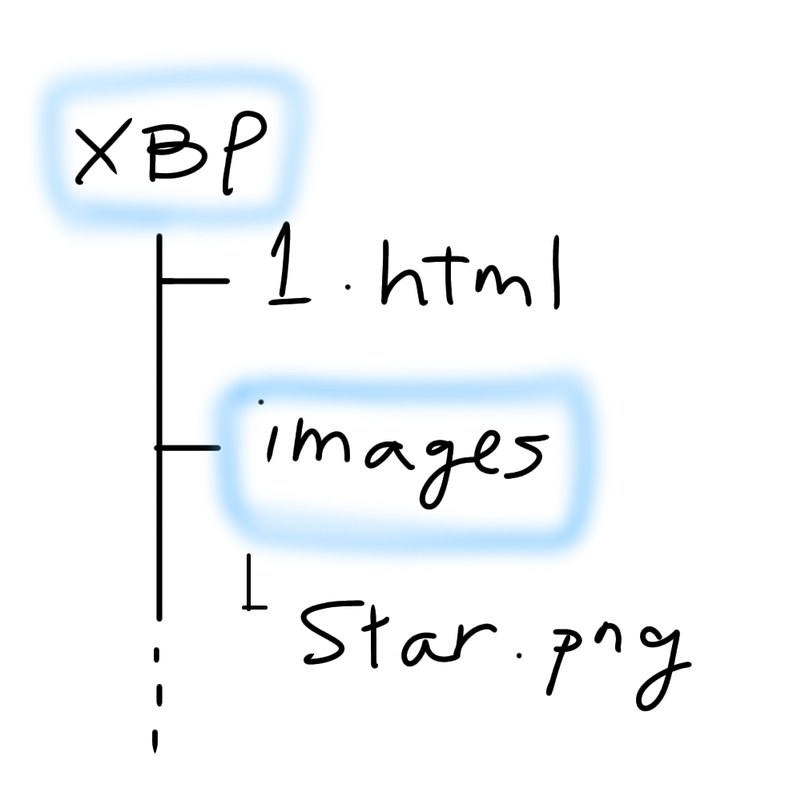

画像を挿入するタグは、
<img src="ファイル名" width="○％"> です。
="○％"の箇所で画像の表示サイズを変更できます。
表示サイズを指定しないと、元のサイズのまま表示されてしまいます。
また、編集しているHTMLファイルと同じフォルダ階層に画像が保存されていない場合、
保存されている階層を指定する必要があります。
例）imagesフォルダ内のイラスト（star.png）を元データの50%の大きさで表示する場合、
以下のように入力する。
<img src="iages/star.png" width="50%">
※スラッシュ（/）の前に同フォルダ内の別のフォルダ名を入力すると、その別フォルダの中のファイルを参照できる。

＜実際の見え方＞
<前のページへ戻る>